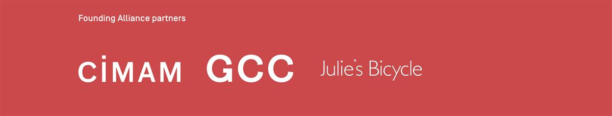

Art Charter for Climate Action
2023
CIMAM | Julie’s Bicycle | GCC | ART 2030
Related Global Goals
13: Climate Action
Officially announced in the United Nations Headquarters on September 22 Art Charter for Climate Action will unite the visual arts sector in taking rapid, ambitious, and meaningful action on the climate and nature crisis.
Together International Committee for Museums and Collections of Modern Art (CIMAM), Julie’s Bicycle, Gallery Climate Coalition (GCC), and ART 2030 have founded an alliance committed to developing a charter that aligns the global art sector with the 2030 Agenda for Sustainable Development and the goals of the United Nations Paris Agreement.
The alliance will strive for environmental values to become central to sector practices; to reduce the negative environmental impacts of developing, producing, transporting, and exhibiting visual art; to support sector adaptation and resilience; and drive for a more green, fair and environmentally just transition.
Art Charter for Climate Action will become a network of networks uniting visual art sector stakeholders and initiatives from across the globe to take meaningful action on the climate and nature crisis.
It is our belief that only by working together can we make a lasting impact on how the art sector functions and facilitate a system change that aspires to influence global public activity and political systems.
SOURCE: ART 2030
OTHER READING: THE ART NEWSPAPER
